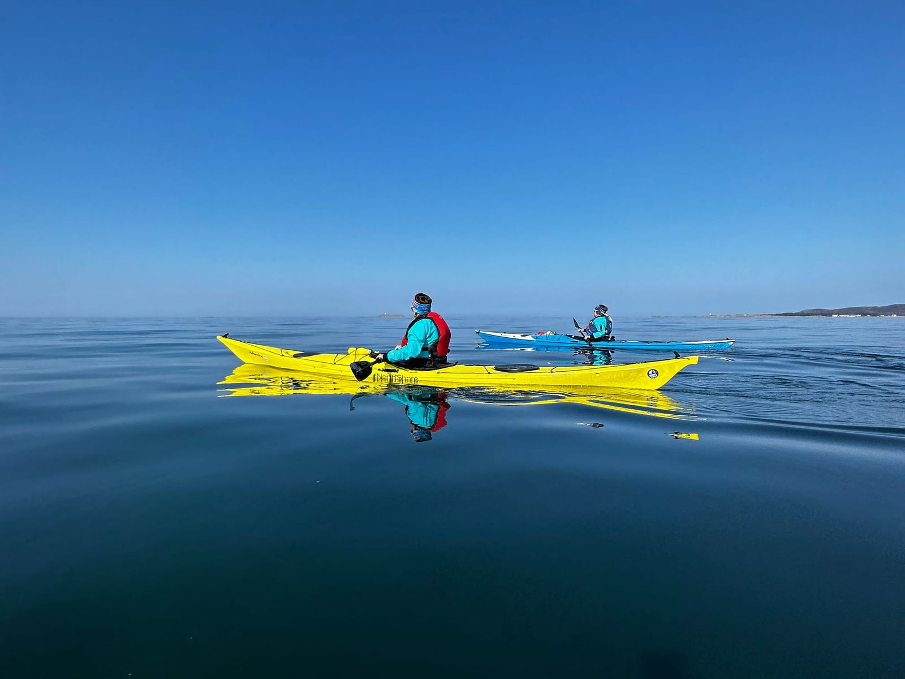

Utleie av kajakk
Lei kvalitetskajakker og utforsk Sunnmørskysten i ditt eget tempo. Utstyr for alle forhold.

Utleiepriser
Velg mellom korttidsleie, døgnleie, flerdagsleie eller ukesleie. Alle priser er inkludert mva.
| Leietid | Kajakk | Våtdrakt | Kajakk + våtdrakt |
|---|---|---|---|
| 3 timer | 550 kr | 200 kr | 690 kr |
| 7 timer | 690 kr | 250 kr | 850 kr |
| 1 døgn | 990 kr | 350 kr | 1 190 kr |
| 2 døgn | 1 790 kr | 650 kr | 2 190 kr |
| 3 døgn | 2 490 kr | 900 kr | 3 050 kr |
| 4 døgn | 3 190 kr | 1 150 kr | 3 890 kr |
| 5 døgn | 3 790 kr | 1 350 kr | 4 590 kr |
| 6 døgn | 4 390 kr | 1 550 kr | 5 290 kr |
| 7 døgn | 4 900 kr | 1 700 kr | 5 890 kr |
Kajakk: komplett med åre, vest og skjørt. Våtdrakt: neopren. Kajakk + våtdrakt er komplett pakke — best pris. Alle priser er inkludert mva.
Alt du trenger for en trygg padletur
Alle utleiekajakker kommer ferdig rigget med sikkerhetsutstyr. Du trenger bare å ta med deg passende klær og eventuelt egen våtdrakt.
Kvalitetsutstyr: britiske og norske havkajakker.
Kun førsteklasses utstyr
Hos Kajakkguiden padler du kun i havkajakker av høyeste kvalitet fra anerkjente merker. Ingen kompromisser.
- Edge
Norskutviklede havkajakker i toppklasse
- P&H
Britiske kvalitetskajakker for alle nivåer
- NDK
Klassiske britiske havkajakker, sjøsterke og pålitelige
Krav og vilkår
Noen ting du bør vite før du leier kajakk hos Kajakkguiden.
- Våttkort påkrevd
Du må ha NPF Våttkort eller tilsvarende dokumentert kompetanse for å leie kajakk. Har du erfaring fra utlandet? Ta kontakt så vurderer jeg det sammen med deg.
- 100 kr rabatt for kursdeltakere
Har du tatt kurs hos Kajakkguiden? Da får du 100 kr rabatt per dag på utleie. Rabatten gjelder så lenge du padler hos Kajakkguiden.
- Reservasjon
Jeg anbefaler å reservere i god tid, spesielt i sommersesongen. Ta kontakt på telefon eller e-post for å booke.
Har du ikke Våttkort? Ta grunnkurs hos Kajakkguiden og få Våttkort pluss rabatt på utleie.
Klar for å komme seg ut på vannet?
Ta kontakt for å reservere kajakk. Jeg anbefaler å booke i god tid, spesielt i sommersesongen.